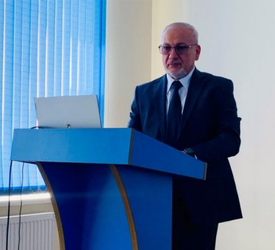

ВЕТЕР ДОБРЫХ ПЕРЕМЕН АЛЬТЕРНАТИВНЫЙ ПОДХОД К ПРЕОБРАЖЕНИЮ ЧЕЛОВЕКА
В начале сентября 2024 года в живописном поселке Приморский на берегу Таманского залива состоялся форум «Преображение человека».

В гостинице «Виноградная лоза» Т.В. Немцева организовала встречу представителей Международной Школы Альтернативной Психологии и Школы Причинности. На форум приехали специалисты из разных городов России и зарубежья: из столицы Республики Азербайджан — г. Баку, из г. Волгограда, а также из городов Ростов-на-Дону, Севастополь, Майкоп, Ярославль, Новороссийск, Астрахань и Геленджик.

Форум проходил в теплой дружественной атмосфере взаимного интереса к творческим научным разработкам и достижениям, представленным авторами. Приветственным словом Татьяна Владимировна Немцева — генеральный директор АО «НТН», доктор экономических наук, профессор, заслуженный деятель науки, академик, открыла работу форума.

В процессе работы были освещены следующие вопросы: духовность как новый этап развития человека (Смирнов А.Д. - кандидат психологических наук, профессор); геометрия Времени тела человека (Закирьяев С.Р.); сакральное поле игры (Марков М. В.); применение Метода В.П. Гоча в медицине, в бизнесе, в оздоровлении физического тела, в понимании Времени, в организации финансовых потоков.

Сенсационным стало выступление Ибадова Яшара Садай оглы — автора новой науки Альтернативная Психология, профессора общей психологии и интегративной медицины, доктора медико-биологических наук, академика Международной академии семейной медицины, нетрадиционных и природных методов лечения, основателя и научного руководителя Школы Альтернативной Психологии (Республика Азербайджан). Доклад Доктора Ибадова «Научные результаты опыта работы по Методологии «Альтернативная Психология» вызвал живейший интерес участников и гостей форума.

Особенно слушателям понравились: метод Фазового портрета, новые символы, полученные на основе технологий Психографии (Ключ Жизни, Символ Жизни, Зеркало Жизни Яй-Осидо), метод «Фазовый портрет Материнства», методика МПП тесты. Методы Альтернативной Психологии, раскрытые автором, так вдохновили слушателей, что Доктора долго не отпускали со сцены, задавали интересующие вопросы по материалам презентации. По окончании форума многие обратились к Доктору Ибадову с просьбой создания их индивидуальных Фазовых портретов.
Во время презентации новой науки в зале воцарилась творческая атмосфера научного взаимопонимания, взаимодействия, со-настройки и вдохновения.
Свое выступление на форуме Яшар Ибадов завершил вручением вкусных подарков из Баку — для всех! Это порадовало коллег не меньше, чем знакомство с новыми позитивными символами Альтернативной Психологии!

Татьяна Владимировна Немцева в заключительной речи так сказала о новой науке: «Самая «волшебная» технология на нашем форуме представлена ученым из Азербайджана доктором Яшаром Садай оглы. Уровень символики, применяемый им для воздействия на негативные процессы для их коррекции, фантастичен результатами даже для ученых нашей философской школы».
И это не случайный вывод! Во время выступления Доктора Яшара все участники форума были на фазе коррекции и реально прошли коллективный сеанс по методике Психографии. В рамках форума Яшар Ибадов провел также индивидуальные сеансы коррекции для всех желающих. Пациенты очень позитивно восприняли работу Доктора Яшара, оставили добрые отзывы о своих впечатлениях во время сеанса коррекции и после него. Некоторые из них даже согласились на дистанционные сеансы, необходимые им для восстановления здоровья. Кроме этого, появились желающие обучаться методике Доктора Я.С. Ибадова. И первая группа слушателей собирается приехать в г. Баку для обучения!

Всем доброго пути и попутного ветра!